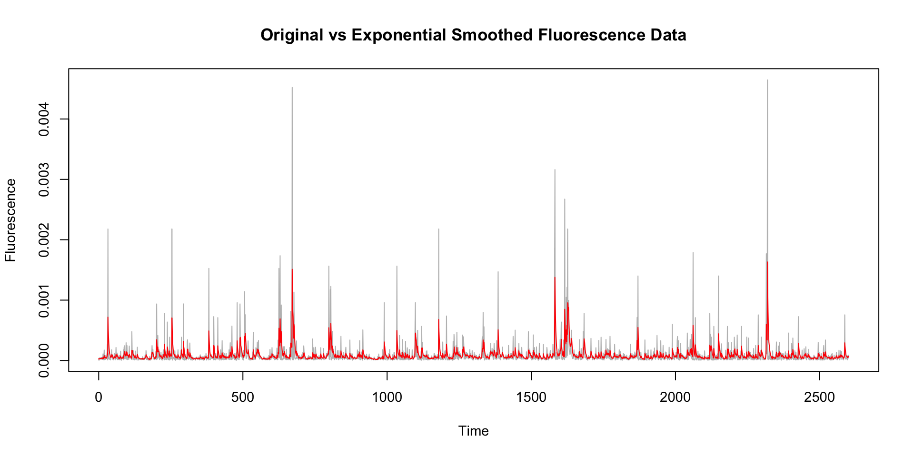
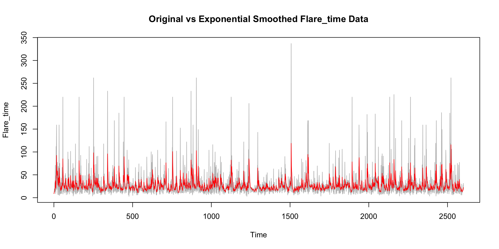
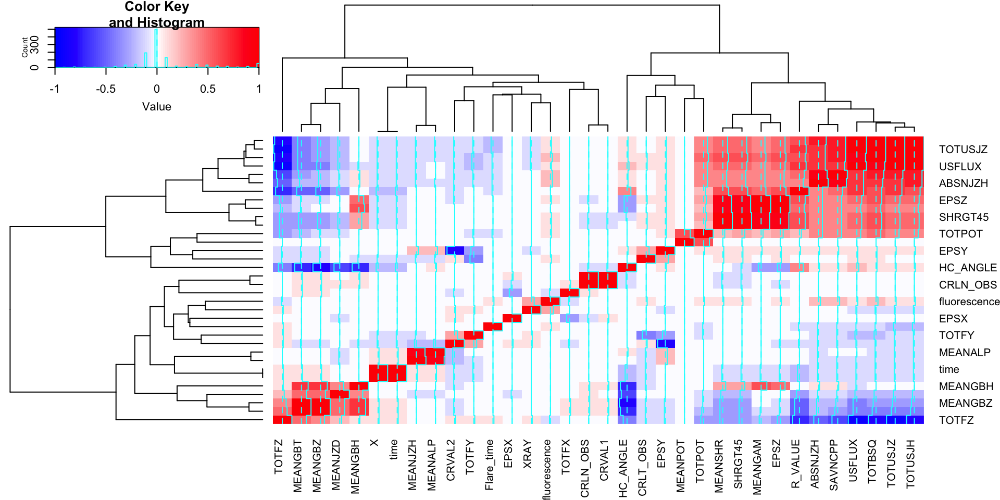

Solar Flares Prediction using Sattelite Data
By Ashmit Bhardwaj and Siddharth Haveliwala
The Problem
- Solar Flares are sudden and intense bursts of energy on the surface of sun. Most of the times, these only stay along the surface or affect the outer atmosphere of the sun.
Why we care about it?
- Well as mentioned, only “most of the times”. A few times, they are significant enough to disrupt earth’s atmosphere, cause damage to the ozone layer and even interfere with our cell, sattelite and radio signals.

The solution
- To mitigate the impact of solar flares, it is crucial to develop a reliable prediction system using satellite data and timely warn the public about potential flares.
 # The Dataset The SWAN-SF dataset refers to the Solar Wind Analysis System (SWAN) dataset specifically focused on Solar Flares (SF). Let’s break down what each part of the name means:
# The Dataset The SWAN-SF dataset refers to the Solar Wind Analysis System (SWAN) dataset specifically focused on Solar Flares (SF). Let’s break down what each part of the name means:
Solar Wind Analysis System (SWAN):
- SWAN is a system designed to analyze and interpret solar wind data obtained from various sources, such as satellites and ground-based instruments.
- It provides valuable information about the solar wind’s properties, such as velocity, density, temperature, and magnetic field strength.
- SWAN helps researchers and scientists study the dynamics of solar wind and its interactions with Earth’s magnetosphere.
- It contains 57 different features of solar surface.
SWAN-SF Dataset:
- The SWAN-SF dataset is a specialized dataset derived from SWAN observations, focusing specifically on parameters related to solar flares.
- It includes data such as solar flare occurrences, intensity, duration, associated solar wind properties, magnetic field variations, and other relevant solar and space weather parameters.
- We can use the SWAN-SF dataset to study the relationship between solar flares and solar wind characteristics, develop predictive models for solar flares, understand space weather phenomena, and improve space weather forecasting capabilities.
How to get started?
- In reading the existing work done by the teams in this field, we found that the three most important variables to be predicted are duration, X-Ray emissions and fluorescence.
- Every solar flare produces these 3 factors. These factors are the ones which decide how major of a threat could a particular solar flare be.
- Hence, in predicting these three features and finding a certain threshold above which these three combined can be harmful, we can forecast our time series and predict the next time a solar flare can cause substantial damage.
ACF Plots

ACF Plots

ACF Plots

Exponential Smoothing
Exponential Smoothing
Exponential Smoothing

Correlation Plot
Lagged Correlation Plot
# Plot lagged correlations
matplot(lags, sapply(lagged_correlations, function(x) x), type = "l", xlab = "Lag", ylab = "Correlation", main = "Lagged Correlation with Fluorescence")
# Add legend
legend("topright", legend = names(lagged_correlations), col = 1:length(lagged_correlations), lty = 1:length(lagged_correlations), cex = 0.8)
Lagged Correlation Plot
# Plot lagged correlations
matplot(lags, sapply(lagged_correlations, function(x) x), type = "l", xlab = "Lag", ylab = "Correlation", main = "Lagged Correlation with Flare_time")
# Add legend
legend("topright", legend = names(lagged_correlations), col = 1:length(lagged_correlations), lty = 1:length(lagged_correlations), cex = 0.8)Lagged Correlation Plot
# Plot lagged correlations
matplot(lags, sapply(lagged_correlations, function(x) x), type = "l", xlab = "Lag", ylab = "Correlation", main = "Lagged Correlation with XRAY")
# Add legend
legend("topright", legend = names(lagged_correlations), col = 1:length(lagged_correlations), lty = 1:length(lagged_correlations), cex = 0.8)Models Used: ARIMA
- Auto ARIMA is an automated algorithm for selecting the optimal parameters (order of autoregression and moving average) for an ARIMA time series model based on statistical criteria.
- It iteratively searches through a range of possible parameter combinations to find the model with the lowest information criterion, providing a convenient and efficient method for time series forecasting without the need for manual parameter tuning.
\[ y_t = \beta_0 + \beta_1 x_{1,t} + \beta_2 x_{2,t} + \ldots + \beta_k x_{k,t} + \phi_1 y_{t-1} + \ldots + \phi_p y_{t-p} + \theta_1 \varepsilon_{t-1} + \ldots + \theta_q \varepsilon_{t-q} + \varepsilon_t \]
Models Used: Vector Auto Regressor
- Vector Auto Regressor (VAR) is a multivariate time series model that captures the interdependencies among multiple time series variables by regressing each variable on its lagged values and the lagged values of other variables in the system.
- It allows for the analysis of the dynamic relationships and interactions between different variables over time, making it a powerful tool for forecasting and understanding complex systems.
\[ \mathbf{Y}_t = \mathbf{A}_1 \mathbf{Y}_{t-1} + \mathbf{A}_2 \mathbf{Y}_{t-2} + \ldots + \mathbf{A}_p \mathbf{Y}_{t-p} + \mathbf{B} \mathbf{X}_t + \mathbf{E}_t \]
ARIMA on Flare Time
Model Diagnostics (Flare Time)

ARIMA on Fluorescence
Model Diagnostics (Flourescence)

ARIMA on X-Ray
Model Diagnostics (X-RAY)

VAR for X-Ray
Call:
lm(formula = y ~ -1 + ., data = datamat)
Residuals:
Min 1Q Median 3Q Max
-6.739 -2.059 -1.451 -0.392 115.037
Coefficients:
Estimate Std. Error t value Pr(>|t|)
TOTUSJH.l1 24.09612 9.95703 2.420 0.0156 *
TOTBSQ.l1 -5.52721 7.61209 -0.726 0.4678
TOTUSJZ.l1 -24.17360 9.99376 -2.419 0.0156 *
USFLUX.l1 12.42054 15.43324 0.805 0.4210
TOTFZ.l1 8.36711 7.76670 1.077 0.2814
TOTFY.l1 2.46492 2.12263 1.161 0.2456
EPSY.l1 0.28380 1.79661 0.158 0.8745
CRVAL2.l1 0.98190 1.77466 0.553 0.5801
XRAY.l1 0.72792 0.01309 55.630 <2e-16 ***
const -6.84772 7.92069 -0.865 0.3874
---
Signif. codes: 0 '***' 0.001 '**' 0.01 '*' 0.05 '.' 0.1 ' ' 1
Residual standard error: 6.741 on 2591 degrees of freedom
Multiple R-squared: 0.5593, Adjusted R-squared: 0.5577
F-statistic: 365.3 on 9 and 2591 DF, p-value: < 2.2e-16VAR for Fluorescence
Call:
lm(formula = y ~ -1 + ., data = datamat)
Residuals:
Min 1Q Median 3Q Max
-1.896e-04 -1.948e-05 -1.193e-05 1.000e-07 1.338e-03
Coefficients:
Estimate Std. Error t value Pr(>|t|)
TOTUSJH.l1 2.389e-04 1.253e-04 1.907 0.05667 .
TOTBSQ.l1 -1.580e-04 8.814e-05 -1.793 0.07312 .
TOTPOT.l1 -1.488e-05 3.341e-05 -0.445 0.65605
TOTUSJZ.l1 -3.885e-04 1.205e-04 -3.224 0.00128 **
ABSNJZH.l1 1.498e-04 7.117e-05 2.105 0.03542 *
SAVNCPP.l1 -2.539e-05 5.100e-05 -0.498 0.61859
USFLUX.l1 6.533e-04 1.670e-04 3.912 9.39e-05 ***
TOTFZ.l1 3.861e-04 8.230e-05 4.692 2.85e-06 ***
EPSZ.l1 7.641e-06 3.461e-05 0.221 0.82530
MEANSHR.l1 2.439e-05 6.249e-05 0.390 0.69638
SHRGT45.l1 -5.575e-05 6.596e-05 -0.845 0.39801
TOTFX.l1 -7.062e-06 1.762e-05 -0.401 0.68860
CRLT_OBS.l1 2.624e-06 3.851e-06 0.681 0.49569
fluorescence.l1 7.579e-01 1.236e-02 61.304 < 2e-16 ***
const -3.653e-04 8.567e-05 -4.264 2.08e-05 ***
---
Signif. codes: 0 '***' 0.001 '**' 0.01 '*' 0.05 '.' 0.1 ' ' 1
Residual standard error: 6.743e-05 on 2586 degrees of freedom
Multiple R-squared: 0.6336, Adjusted R-squared: 0.6317
F-statistic: 319.5 on 14 and 2586 DF, p-value: < 2.2e-16VAR for Flare Time
Call:
lm(formula = y ~ -1 + ., data = datamat)
Residuals:
Min 1Q Median 3Q Max
-8.617 -4.063 -2.094 0.704 92.422
Coefficients:
Estimate Std. Error t value Pr(>|t|)
TOTUSJH.l1 -27.00006 14.20391 -1.901 0.0574 .
TOTBSQ.l1 -0.09121 9.62186 -0.009 0.9924
TOTPOT.l1 -2.15312 4.11800 -0.523 0.6011
TOTUSJZ.l1 -2.45246 13.38761 -0.183 0.8547
ABSNJZH.l1 6.51099 8.65862 0.752 0.4521
SAVNCPP.l1 -4.53720 6.22188 -0.729 0.4659
USFLUX.l1 35.94774 19.31366 1.861 0.0628 .
TOTFZ.l1 14.60975 10.02061 1.458 0.1450
R_VALUE.l1 0.02865 1.42038 0.020 0.9839
Flare_time.l1 0.72804 0.01332 54.672 <2e-16 ***
const -6.24216 10.06755 -0.620 0.5353
---
Signif. codes: 0 '***' 0.001 '**' 0.01 '*' 0.05 '.' 0.1 ' ' 1
Residual standard error: 8.316 on 2590 degrees of freedom
Multiple R-squared: 0.554, Adjusted R-squared: 0.5522
F-statistic: 321.7 on 10 and 2590 DF, p-value: < 2.2e-16Model Comparison
ARIMA Forecast - Flare Duration
Point Forecast Lo 80 Hi 80 Lo 95 Hi 95
2603 23.75824 13.04845 34.46804 7.379030 40.13746
2604 24.71017 11.38409 38.03625 4.329687 45.09066
2605 25.41502 10.85269 39.97735 3.143857 47.68618
2606 25.93692 10.73943 41.13441 2.694364 49.17947
2607 26.32336 10.78865 41.85806 2.565080 50.08163
2608 26.60949 10.89298 42.32600 2.573163 50.64582
2609 26.82136 11.00606 42.63666 2.633943 51.00877
2610 26.97823 11.10903 42.84744 2.708383 51.24808
2611 27.09439 11.19571 42.99307 2.779463 51.40932
2612 27.18040 11.26559 43.09521 2.840793 51.52000
2613 27.24408 11.32043 43.16774 2.890957 51.59721
2614 27.29124 11.36274 43.21973 2.930703 51.65177
2615 27.32615 11.39500 43.25730 2.961557 51.69075
2616 27.35200 11.41940 43.28461 2.985183 51.71883
2617 27.37115 11.43774 43.30455 3.003105 51.73919
2618 27.38532 11.45148 43.31916 3.016610 51.75403
2619 27.39582 11.46173 43.32990 3.026738 51.76489
2620 27.40359 11.46937 43.33780 3.034308 51.77287
2621 27.40934 11.47505 43.34363 3.039952 51.77873
2622 27.41360 11.47927 43.34793 3.044152 51.78305VAR Forecast - Flare Duration
fcst lower upper CI
[1,] 24.19927 7.901053 40.49748 16.29822
[2,] 25.40492 5.220392 45.58944 20.18452
[3,] 26.24312 4.235034 48.25121 22.00809
[4,] 26.82083 3.863255 49.77841 22.95758
[5,] 27.21417 3.731690 50.69664 23.48248
[6,] 27.47728 3.689799 51.26477 23.78749
[7,] 27.64868 3.675133 51.62223 23.97355
[8,] 27.75570 3.663014 51.84839 24.09269
[9,] 27.81778 3.645192 51.99036 24.17258
[10,] 27.84870 3.620307 52.07709 24.22839
[11,] 27.85827 3.589580 52.12696 24.26869
[12,] 27.85345 3.554922 52.15197 24.29852
[13,] 27.83917 3.518165 52.16017 24.32100
[14,] 27.81893 3.480796 52.15707 24.33814
[15,] 27.79521 3.443925 52.14650 24.35129
[16,] 27.76974 3.408322 52.13115 24.36142
[17,] 27.74372 3.374487 52.11295 24.36923
[18,] 27.71798 3.342721 52.09325 24.37526
[19,] 27.69309 3.313176 52.07301 24.37991
[20,] 27.66940 3.285900 52.05290 24.38350ARIMA Forecast - Fluorescence
Point Forecast Lo 80 Hi 80 Lo 95 Hi 95
2603 6.959940e-05 -1.822359e-05 0.0001574224 -6.471428e-05 0.0002039131
2604 7.409330e-05 -3.621990e-05 0.0001844065 -9.461619e-05 0.0002428028
2605 7.747380e-05 -4.385824e-05 0.0001988058 -1.080875e-04 0.0002630351
2606 8.027169e-05 -4.806357e-05 0.0002086069 -1.160001e-04 0.0002765435
2607 8.258738e-05 -5.033241e-05 0.0002155072 -1.206959e-04 0.0002858707
2608 8.450398e-05 -5.146711e-05 0.0002204751 -1.234459e-04 0.0002924538
2609 8.609027e-05 -5.193209e-05 0.0002241126 -1.249967e-04 0.0002971772
2610 8.740317e-05 -5.200692e-05 0.0002268133 -1.258062e-04 0.0003006125
2611 8.848980e-05 -5.186298e-05 0.0002288426 -1.261613e-04 0.0003031409
2612 8.938916e-05 -5.160575e-05 0.0002303841 -1.262439e-04 0.0003050223
2613 9.013352e-05 -5.129957e-05 0.0002315666 -1.261697e-04 0.0003064368
2614 9.074959e-05 -5.098288e-05 0.0002324821 -1.260115e-04 0.0003075107
2615 9.125949e-05 -5.067770e-05 0.0002331967 -1.258147e-04 0.0003083337
2616 9.168151e-05 -5.039574e-05 0.0002337588 -1.256069e-04 0.0003089699
2617 9.203080e-05 -5.014232e-05 0.0002342039 -1.254042e-04 0.0003094658
2618 9.231989e-05 -4.991886e-05 0.0002345586 -1.252155e-04 0.0003098553
2619 9.255916e-05 -4.972453e-05 0.0002348429 -1.250450e-04 0.0003101633
2620 9.275719e-05 -4.955728e-05 0.0002350717 -1.248940e-04 0.0003104084
2621 9.292110e-05 -4.941446e-05 0.0002352567 -1.247623e-04 0.0003106045
2622 9.305675e-05 -4.929324e-05 0.0002354067 -1.246488e-04 0.0003107623VAR Forecast - Fluorescence
fcst lower upper CI
[1,] 6.689851e-05 -6.526213e-05 0.0001990592 0.0001321606
[2,] 6.894506e-05 -9.715906e-05 0.0002350492 0.0001661041
[3,] 7.082327e-05 -1.125664e-04 0.0002542129 0.0001833896
[4,] 7.262201e-05 -1.206953e-04 0.0002659393 0.0001933173
[5,] 7.427264e-05 -1.252350e-04 0.0002737803 0.0001995077
[6,] 7.570704e-05 -1.279704e-04 0.0002793844 0.0002036774
[7,] 7.691936e-05 -1.297811e-04 0.0002836198 0.0002067004
[8,] 7.796717e-05 -1.310600e-04 0.0002869943 0.0002090272
[9,] 7.894400e-05 -1.319421e-04 0.0002898301 0.0002108861
[10,] 7.994591e-05 -1.324471e-04 0.0002923389 0.0002123930
[11,] 8.104548e-05 -1.325670e-04 0.0002946580 0.0002136125
[12,] 8.227855e-05 -1.323109e-04 0.0002968680 0.0002145894
[13,] 8.364315e-05 -1.317195e-04 0.0002990058 0.0002153626
[14,] 8.510746e-05 -1.308607e-04 0.0003010757 0.0002159682
[15,] 8.662200e-05 -1.298171e-04 0.0003030611 0.0002164391
[16,] 8.813225e-05 -1.286716e-04 0.0003049361 0.0002168038
[17,] 8.958889e-05 -1.274968e-04 0.0003066746 0.0002170857
[18,] 9.095418e-05 -1.263492e-04 0.0003082576 0.0002173034
[19,] 9.220454e-05 -1.252667e-04 0.0003096758 0.0002174713
[20,] 9.332993e-05 -1.242706e-04 0.0003109304 0.0002176005ARIMA Forecast - X-Ray
Point Forecast Lo 80 Hi 80 Lo 95 Hi 95
2603 19.38397 10.3037368 28.46420 5.4969526 33.27098
2604 17.11939 5.6181250 28.62066 -0.4702772 34.70906
2605 17.11939 4.4101933 29.82859 -2.3176493 36.55643
2606 17.11939 3.3075015 30.93128 -4.0040709 38.24285
2607 17.11939 2.2865599 31.95222 -5.5654663 39.80425
2608 17.11939 1.3315012 32.90728 -7.0261025 41.26488
2609 17.11939 0.4310103 33.80777 -8.4032845 42.64207
2610 17.11939 -0.4233179 34.66210 -9.7098667 43.94865
2611 17.11939 -1.2379297 35.47671 -10.9557079 45.19449
2612 17.11939 -2.0178974 36.25668 -12.1485656 46.38735
2613 17.11939 -2.7672979 37.00608 -13.2946747 47.53346
2614 17.11939 -3.4894658 37.72825 -14.3991353 48.63792
2615 17.11939 -4.1871706 38.42595 -15.4661826 49.70496
2616 17.11939 -4.8627415 39.10152 -16.4993793 50.73816
2617 17.11939 -5.5181605 39.75694 -17.5017560 51.74054
2618 17.11939 -6.1551299 40.39391 -18.4759167 52.71470
2619 17.11939 -6.7751253 41.01391 -19.4241178 53.66290
2620 17.11939 -7.3794354 41.61822 -20.3483303 54.58711
2621 17.11939 -7.9691936 42.20797 -21.2502878 55.48907
2622 17.11939 -8.5454033 42.78418 -22.1315243 56.37031VAR Forecast - X-Ray
fcst lower upper CI
[1,] 19.34683 6.1348738 32.55878 13.21195
[2,] 17.25790 0.9096092 33.60619 16.34829
[3,] 15.68009 -2.1264440 33.48663 17.80654
[4,] 14.48320 -4.0709138 33.03731 18.55411
[5,] 13.57120 -5.3867462 32.52914 18.95794
[6,] 12.87312 -6.3120902 32.05833 19.18521
[7,] 12.33632 -6.9818501 31.65449 19.31817
[8,] 11.92165 -7.4774246 31.32072 19.39907
[9,] 11.59987 -7.8503981 31.05013 19.45027
[10,] 11.34907 -8.1348297 30.83297 19.48390
[11,] 11.15276 -8.3540013 30.65952 19.50676
[12,] 10.99848 -8.5242944 30.52126 19.52278
[13,] 10.87678 -8.6575103 30.41107 19.53429
[14,] 10.78042 -8.7623136 30.32316 19.54274
[15,] 10.70389 -8.8451626 30.25294 19.54905
[16,] 10.64291 -8.9109301 30.19676 19.55384
[17,] 10.59420 -8.9633295 30.15173 19.55753
[18,] 10.55519 -9.0052141 30.11559 19.56040
[19,] 10.52387 -9.0387918 30.08653 19.56266
[20,] 10.49868 -9.0657815 30.06313 19.56446